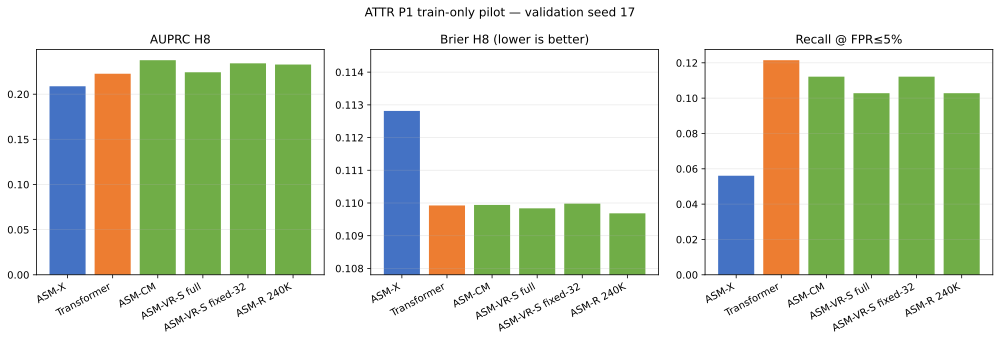
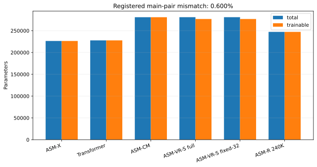

Limited evidence. Train/validation pilot only. Test remained sealed. These results support no safety, causal-understanding, or universal-superiority claim.
Leakage audits: feature=True; split=True; threshold=validation_only.


| Arm | Backbone params | Total incl. head | Trainable incl. head | AUPRC H8 | Brier H8 | Recall @ FPR≤5% | Threshold | Role |
|---|---|---|---|---|---|---|---|---|
| ASM-X | 219,610 | 226,444 | 226,444 | 0.2087 | 0.1128 | 0.0561 | 0.2870 | registered_main_pair |
| Transformer | 220,208 | 227,810 | 227,810 | 0.2226 | 0.1099 | 0.1215 | 0.2805 | registered_main_pair |
| ASM-CM | 274,058 | 280,892 | 280,892 | 0.2376 | 0.1099 | 0.1121 | 0.2861 | supplementary_unmatched |
| ASM-VR-S full | 274,135 | 280,969 | 276,809 | 0.2242 | 0.1098 | 0.1028 | 0.2820 | supplementary_unmatched |
| ASM-VR-S fixed-32 | 274,135 | 280,969 | 276,809 | 0.2342 | 0.1100 | 0.1121 | 0.2909 | supplementary_unmatched |
| ASM-R 240K | 240,390 | 247,224 | 247,224 | 0.2328 | 0.1097 | 0.1028 | 0.2781 | supplementary_unmatched |
| Split | Horizon | Positives | Prevalence |
|---|---|---|---|
| train | 1 | 88 | 0.0282 |
| train | 4 | 283 | 0.0908 |
| train | 8 | 448 | 0.1437 |
| train | 16 | 570 | 0.1829 |
| validation | 1 | 19 | 0.0233 |
| validation | 4 | 70 | 0.0859 |
| validation | 8 | 107 | 0.1313 |
| validation | 16 | 130 | 0.1595 |